"YOU WANT MY TREASURE? YOU CAN HAVE IT. I LEFT EVERYTHING I GATHERED TOGETHER IN ONE PLACE. NOW YOU'LL JUST HAVE TO FIND IT!(click images for recipes)
Marine Captain's Curry is seen on the 133rd episode of the One Piece anime "Inherited Recipe! Sanji the Curry Iron Chef".
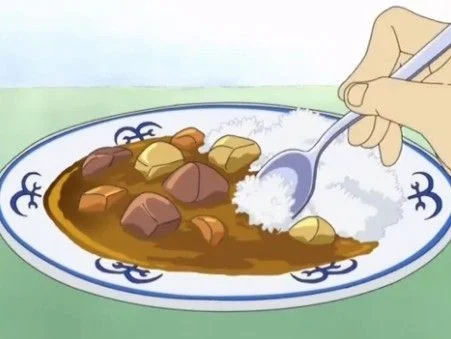 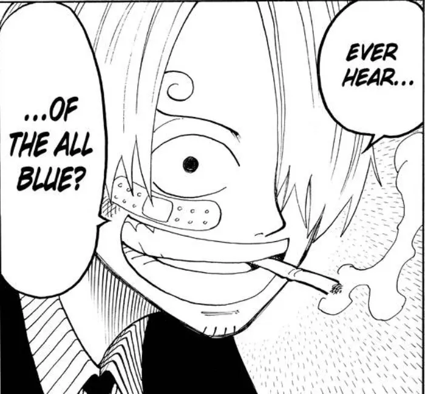Sanji's Risotto is seen on the 21st episode of the One Piece anime "Respecting Sanji".
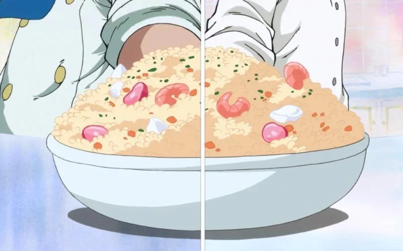 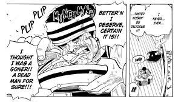Using the power of Cola, Frank can achieve anything!!
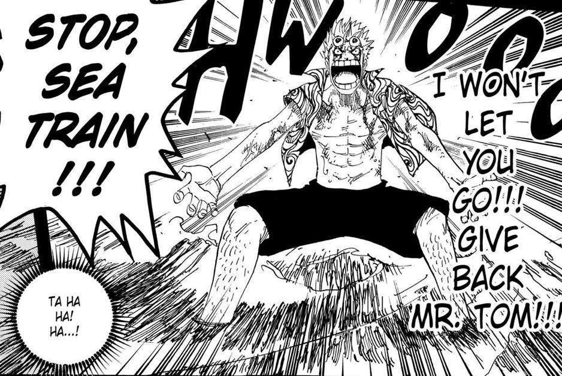
Elbaf Semla is first seen on episode 836 of One Piece as the famous Big Mom goes on a rampage for it!!
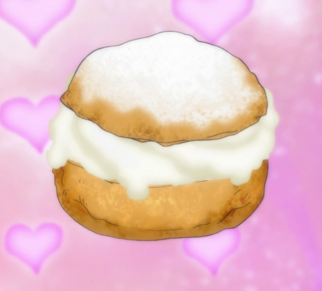 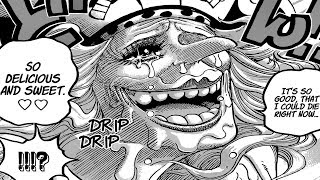He isn't called "Cotton candy lover" for no reason!
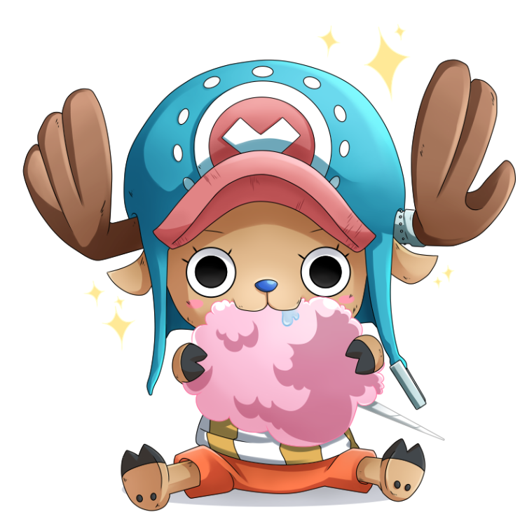 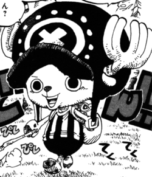Oden wouldn't be Oden if it wasn't boiled!
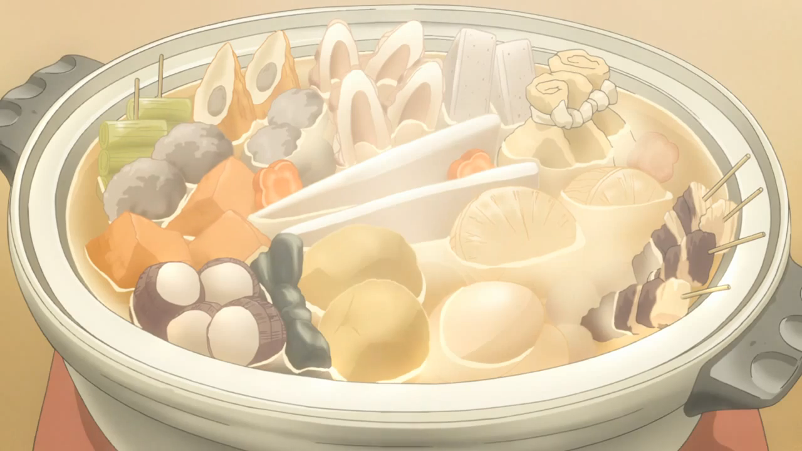 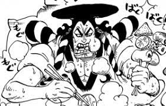